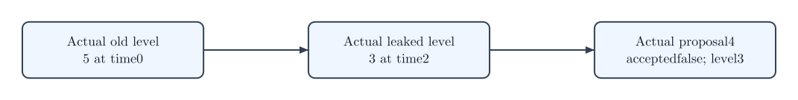
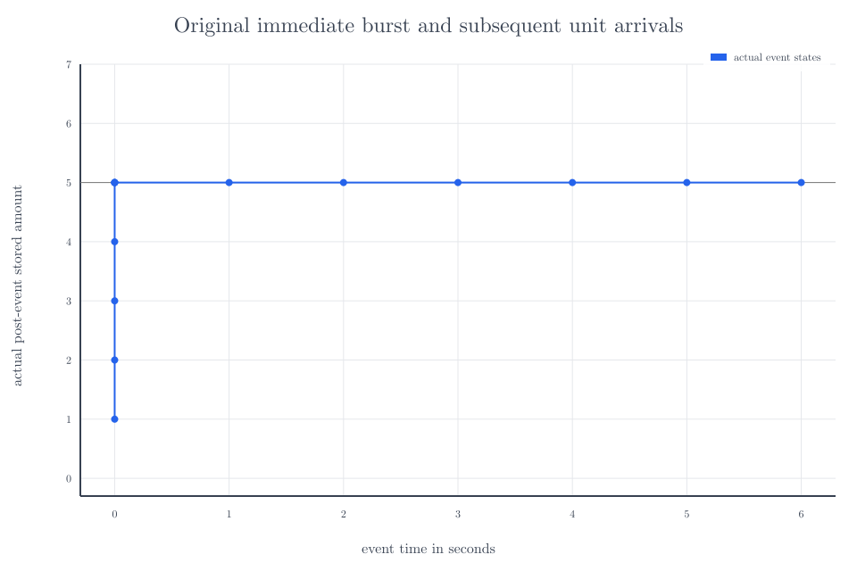
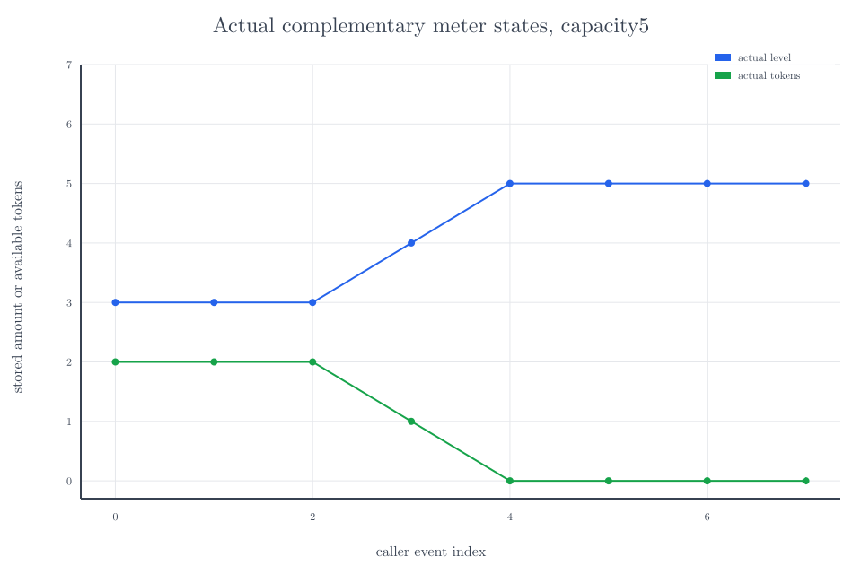
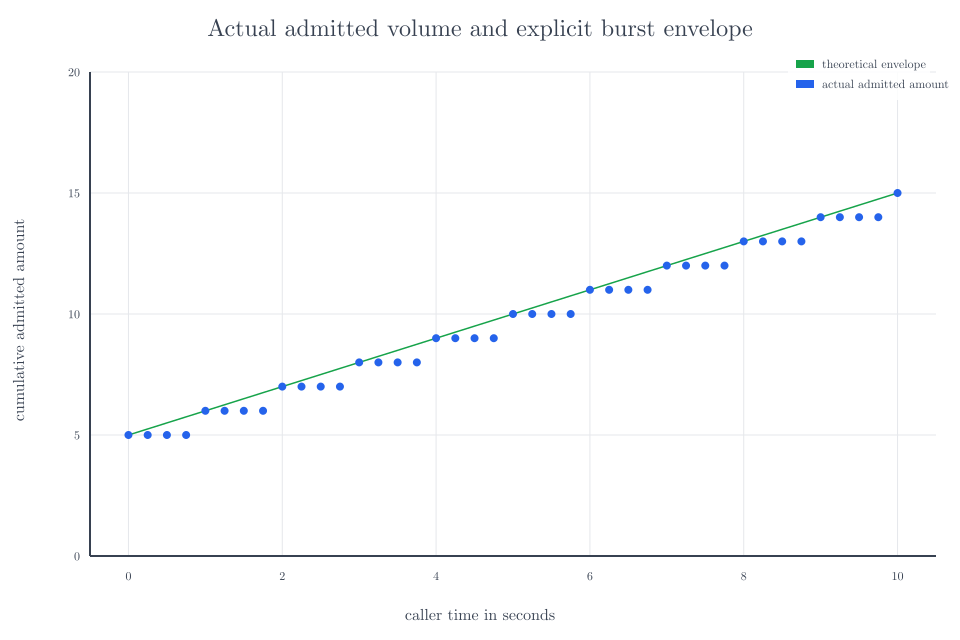

Leaky bucket as an admission meter
Abstract
This implementation meters arrivals: it admits a fitting amount immediately or rejects it. It has no queue or delayed release schedule, so it does not pace accepted traffic into a smooth output stream. We retain the original burst-and-steady-arrival experiment, inspect actual event transitions and show how complementary token storage gives the same meter in exact arithmetic.
The actual state transition
Let level L be stored admitted amount, capacity C>0 and leak rate r>=0. At nondecreasing event time t, with previous committed time s, compute
The meter starts empty at time0, so it allows an immediate burst up to C. There is no output queue, service-completion clock or pacing guarantee. A rejected event still advances lazy leakage; unused drainage saturates at zero and is not banked below zero. Same-time arrivals follow caller order.
One actual rejection after leakage
Fill a capacity5 meter with amount5 at time0, then propose amount4 at time2 with rate1. Actual leakage leaves3; the proposal would exceed5, so it is rejected and the committed level remains3. The diagram uses the actual native transition rather than a reconstructed event.
#include <dm/dm.hpp>
int main() {
std::filesystem::create_directories("build");
auto t = dm::algorithms::leaky_bucket_trace(5, 1, {{0, 5}, {2, 4}});
auto e = t.events.back();
std::print("| actual time | actual amount | actual old level | actual leaked level | actual accepted | " "actual committed level |\n| ---: | ---: | ---: | ---: | --- | ---: |\n");
for (auto &r : t.events)
std::print("| {} | {} | {} | {} | {} | {} |\n", r.time, r.amount,
r.before, r.leaked_level, r.accepted, r.after);
dm::graphics::Diagram d;
d.node("old", {0, 0},
std::format("Actual old level\n{} at time{}", e.before,
e.previous_time)).node("leak", {6, 0},
std::format(
"Actual leaked level\n{} at time{}",
e.leaked_level, e.time)).node(
"new", {12, 0},
std::format("Actual proposal{}\naccepted{}; level{}", e.amount,
e.accepted, e.after)).edge("old", "leak").edge("leak", "new").save_svg("build/leaky_transition.svg");
}| actual time | actual amount | actual old level | actual leaked level | actual accepted | actual committed level |
|---|---|---|---|---|---|
| 0 | 5 | 0 | 0 | true | 5 |
| 2 | 4 | 5 | 3 | false | 3 |

Original burst and steady arrivals
Retain capacity5, leak rate1 unit per second, eight unit arrivals at time0 and one unit arrival at each time1 through6. The first five are admitted together immediately; the next three overflow. Each later one-unit arrival exactly replaces one unit of elapsed drainage. Flat post-event level5 does not mean arrivals were paced: five accepted arrivals share time0. The figure shows actual event states, with repeated times retained and event order printed.
#include <dm/dm.hpp>
int main() {
std::filesystem::create_directories("build");
std::vector<dm::algorithms::LeakyBucketArrival> a(8, {0, 1});
for (int i = 1; i <= 6; ++i)
a.push_back({double(i), 1});
auto t = dm::algorithms::leaky_bucket_trace(5, 1, a);
std::vector<double> x, y;
std::print("| actual event index | actual time | actual accepted | actual leaked level | actual " "post-event level |\n| ---: | ---: | --- | ---: | ---: |\n");
for (std::size_t i = 0; i < t.events.size(); ++i) {
auto &e = t.events[i];
std::print("| {} | {} | {} | {} | {} |\n", i, e.time, e.accepted,
e.leaked_level, e.after);
x.push_back(e.time);
y.push_back(e.after);
}
std::print("\nActual accepted events {}; actual rejected events {}.\n",
t.accepted, t.rejected);
auto p = dm::graphics::RPlot::create();
p.line(x, y, "actual event states", {37, 99, 235}, 2).points(x, y, "",
{37, 99, 235},
4).abline_h(
5, {120, 120, 120}, 1).y_limits(-.3, 7).title("Original immediate burst and subsequent unit arrivals").x_label("event time in seconds").y_label("actual post-event stored amount").save_svg("build/leaky_original.svg");
}| actual event index | actual time | actual accepted | actual leaked level | actual post-event level |
|---|---|---|---|---|
| 0 | 0 | true | 0 | 1 |
| 1 | 0 | true | 1 | 2 |
| 2 | 0 | true | 2 | 3 |
| 3 | 0 | true | 3 | 4 |
| 4 | 0 | true | 4 | 5 |
| 5 | 0 | false | 5 | 5 |
| 6 | 0 | false | 5 | 5 |
| 7 | 0 | false | 5 | 5 |
| 8 | 1 | true | 4 | 5 |
| 9 | 2 | true | 4 | 5 |
| 10 | 3 | true | 4 | 5 |
| 11 | 4 | true | 4 | 5 |
| 12 | 5 | true | 4 | 5 |
| 13 | 6 | true | 4 | 5 |
Actual accepted events 11; actual rejected events 3.

Complementary token storage
Define available tokens T=C−L. Then leakage becomes T−=min(C,T+r*delta_t), and admitting amount a subtracts it when T−>=a. Thus an initially empty leaky meter and an initially full token bucket make the same decisions in exact arithmetic. The earlier distinction claiming that only the token bucket permits bursts was incorrect for this meter implementation. A queued leaky-bucket shaper is a different system.
This dyadic control uses exactly representable quarter units/times, so it can check native complementary states without a decimal-rounding ambiguity. The token meter is the library’s existing implementation, not report-side simulated arithmetic.
#include <dm/dm.hpp>
int main() {
std::filesystem::create_directories("build");
std::vector<dm::algorithms::LeakyBucketArrival> a{{0, 3}, {0, 3}, {.5, 1},
{1, 2}, {4, 5}, {4, 0},
{4, 1}, {4.5, 1}};
auto t = dm::algorithms::leaky_bucket_trace(5, 2, a);
dm::algorithms::TokenBucket token(5, 2);
std::vector<double> x, level, tokens;
std::print("| actual event | actual leaky accepted | actual token accepted | actual leaky level | " "actual available tokens | actual sum |\n| ---: | --- | --- | ---: | ---: | ---: |\n");
for (std::size_t i = 0; i < a.size(); ++i) {
bool decision = token.allow(a[i].time, a[i].amount);
std::print("| {} | {} | {} | {} | {} | {} |\n", i, t.events[i].accepted,
decision, t.events[i].after, token.stored_tokens(),
t.events[i].after + token.stored_tokens());
x.push_back(i);
level.push_back(t.events[i].after);
tokens.push_back(token.stored_tokens());
}
auto p = dm::graphics::RPlot::create();
p.line(x, level, "actual level", {37, 99, 235}, 2).points(x, level, "",
{37, 99, 235}, 4).line(x, tokens, "actual tokens", {22, 163, 74}, 2).points(x, tokens, "", {22, 163, 74}, 4).y_limits(-.3, 7).title("Actual complementary meter states, capacity5").x_label("caller event index").y_label("stored amount or available tokens").save_svg("build/leaky_duality.svg");
}| actual event | actual leaky accepted | actual token accepted | actual leaky level | actual available tokens | actual sum |
|---|---|---|---|---|---|
| 0 | true | true | 3 | 2 | 5 |
| 1 | false | false | 3 | 2 | 5 |
| 2 | true | true | 3 | 2 | 5 |
| 3 | true | true | 4 | 1 | 5 |
| 4 | true | true | 5 | 0 | 5 |
| 5 | true | true | 5 | 0 | 5 |
| 6 | false | false | 5 | 0 | 5 |
| 7 | true | true | 5 | 0 | 5 |

Burst envelope, not a release timetable
Over an interval of length delta_t, at most C units of initial headroom plus r*delta_t units of new drainage can be used. In exact arithmetic, admitted amount is bounded by C+r*delta_t. Idle periods can waste drainage, so the bound need not be attained. This is a volume envelope, not an assertion that instantaneous output rate is bounded by r. A saturated unit workload at quarter-second times illustrates real admissions and the time-zero burst. The continuous line is explicitly a theoretical envelope; points are cumulative sums of actual accepted amounts. Floating-point arithmetic can introduce small discrepancies at thresholds.
#include <dm/dm.hpp>
int main() {
std::filesystem::create_directories("build");
std::vector<dm::algorithms::LeakyBucketArrival> a;
for (int k = 0; k <= 40; ++k)
for (int j = 0; j < 8; ++j)
a.push_back({k * .25, 1});
auto t = dm::algorithms::leaky_bucket_trace(5, 1, a);
std::vector<double> x, y, bound;
double admitted = 0;
std::print("| actual event time | cumulative actual admitted amount | theoretical capacity plus rate " "times time |\n| ---: | ---: | ---: |\n");
for (std::size_t i = 0; i < t.events.size(); ++i) {
auto &e = t.events[i];
if (e.accepted)
admitted += e.amount;
if (i + 1 == t.events.size() || t.events[i + 1].time != e.time) {
x.push_back(e.time);
y.push_back(admitted);
bound.push_back(5 + e.time);
if (int(e.time * 4) % 8 == 0)
std::print("| {} | {} | {} |\n", e.time, admitted, 5 + e.time);
}
}
auto p = dm::graphics::RPlot::create();
p.line(x, bound, "theoretical envelope", {22, 163, 74}, 1.5).points(
x, y, "actual admitted amount", {37, 99, 235}, 4).y_limits(0, 20).title(
"Actual admitted volume and explicit burst envelope").x_label(
"caller time in seconds").y_label("cumulative admitted amount").save_svg("build/leaky_envelope.svg");
}| actual event time | cumulative actual admitted amount | theoretical capacity plus rate times time |
|---|---|---|
| 0 | 5 | 5 |
| 2 | 7 | 7 |
| 4 | 9 | 9 |
| 6 | 11 | 11 |
| 8 | 13 | 13 |
| 10 | 15 | 15 |

Contracts and verification
Capacity is positive finite and rate nonnegative finite, including zero. Event times are finite, nonnegative and nondecreasing; amounts finite and nonnegative, including zero. Invalid single operations throw before changing stored time/level. Oversized finite amounts are rejected rather than queued; valid rejection still advances leakage. Ordinary finite arithmetic order is retained; overflowing elapsed drainage uses a widened fallback and saturates at zero. The trace validates every event and complete record quota before simulation, then captures each actual transition once. Its default million-entry cap counts event records, excludes fields/capacities/bytes, and zero disables only that optional cap.
Independent exact Fraction transitions verified2000 actual meter events.
Another10000 ordinary events matched the frozen decisions and levels exactly.
Native tests compare24000 dyadic events with complementary native token storage
and retain original burst/steady decisions, rejection leakage, idle/zero
controls, atomic guard failures, complete quotas/ownership and overflowing
drainage. The complete ten-report batch passed77 native CTest cases,39 directly
instrumented ASan/UBSan cases,106 compiled/executed public examples,479/479
scoped definitions and ten representative clangd hovers. All4 complete report
programs executed and all4 native figures were visually reviewed. HTML/Markdown
computed result and identical source/build/export figure bytes passed
verification. Repeatable receipts are retained under
build/mepml-conversion/batch-194-203/.
References
J. Heinanen and R. Guerin(1999), RFC2697: A Single Rate Three Color Marker. Its distinction between a traffic meter and marker, and initially full token buckets, provides related context; this single-bucket lazy meter does not implement the RFC’s complete two-bucket three-color algorithm.